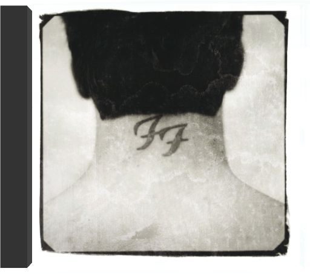

L'ancien batteur de Nirvana, Dave Grohl, ne souhaiterait certainement pas que l'on dise que le premier disque de son groupe, les Foo Fighters, sonne comme un disque du défunt roi du grunge. Malheureusement, les comparaisons sont inévitables. Grohl, chanteur-guitariste des Foo Fighters, a écrit la plupart de ces chansons lorsqu'il n'était pas occupé à tenir les baguettes pour son ancien leader. Il est normal que le don de Cobain pour composer des chansons dures et rapides, mais également mélodiques, déteigne sur Grohl et sur les autres membres du groupe, Pat Smear (ex-Germs ayant également joué avec Nirvana), William Goldsmith et Nate Mendel (deux ex-Sunny Day Real Estate de Seattle). Dave Grohl dévoile également des cordes vocales qui font légèrement penser au magnifique timbre de Cobain. De nombreux groupes ont voulu reproduire l'esprit du groupe de Kurt Cobain, mais tous ont échoué. Ainsi, on peut reconnaître le mérite des Foo Fighters qui ont réussi à produire un album de rock heavy puissant qui n'est ni bruyant ni creux. Profitez donc du punk néo-garage (ou grunge) de "I'll Stick Around", "Oh, George" et "Good Grief", car il est fort probable que nous n'entendions plus grand-chose de l'inventeur du grunge... Et, qui sait, vous serez peut- être séduit par les talents de compositeur pop de Grohl sur le folk-rock harmonieux de "Big Me" qui fait penser aux Byrds, ou sur l'entraînant "This Is A Call". —Roni Sarig |  there is nothing left to losefoo fighters Dans ce troisième album, Dave Grohl, l'ex-batteur de Nirvana prouve avec son groupe combien l'on peut être et avoir été. Peut-être est-il même encore davantage avec les Foo Fighters que dans l'ombre de Kurt Cobain, finalement, Dave Grohl. Et lorsqu'il proclame en titre qu'"il n'y a plus rien à perdre", il ne se contente pas de foncer tête baissée, il connaît aussi les enjeux. Il monte en première ligne, guitare en bandoulière. Et l'album avec ses 9 plages haute tension passe comme une lettre à la poste. Tout à l'énergie, avec même un brin d'humour ici et là, comme dans "Learn To Fly". Les Foo Fighters laissent de côté toute prétention, et libèrent leur naturel pop et nerveux avec même quelque répit parfois, pour mieux charger par la suite. On se prend à penser que finalement la fin d'un groupe majeur peut donner le jour à un autre, plutôt intéressant, même si moins exposé ! Sans doute ce que voulait Dave Grohl, justement. —José Ruiz  Ceux qui apprécient la simplicité basique du rock violent que délivre régulièrement l'ex-batteur de Nirvana, Dave Grohl, que ce soit avec ses Foo Fighters ou en qualité de digne serviteur de la musique des Californiens Queens Of The Stone Age, seront ravis. La dynamique hardcore du combo demeure inchangée depuis le premier album homonyme paru en 1995. Celui-ci, qui est déjà le quatrième, enfonce encore plus loin le clou planté avec le précédent et brûlant There Is Nothing Left To Lose qui se terminait en apothéose et laissait augurer une suite du même acabit : survitaminée ! Quasi constamment en zone rouge, Grohl et les siens distillent une poignée de titres imparables, dont "All My Life" et "Low" qui figurent parmi les meilleurs. Soit des hymnes au fort relent de punk, qui, bien évidemment, évoquent Nirvana avec leurs tempos plombés et leurs riffs acérés. Du panache, les Foo Fighters en ont encore à revendre. Bien que cela ne soit pas le plus important, on notera par ailleurs que le groupe a fait appel au graphiste Raymond Pettibon pour illustrer la couverture du livret de One By One. On lui doit, entre autres, quelques-unes des plus illustres pochettes de l'histoire du hardcore (notamment pour Blak Flag et le label SST) et celle de Goo de SonicYouth. Pour les Foo Fighters, c'est aussi une façon comme une autre de souligner l'héritage ! —Hervé Comte  Groundbreaking 2014 album. 8 songs written & recorded in 8 different cities in collaboration with local artists. The whole process documented in the companion HBO TV series! |

Julien
Collection Total:
1 866 Items
1 866 Items
Last Updated:
Feb 24, 2021
Feb 24, 2021


 Made with Delicious Library
Made with Delicious Library